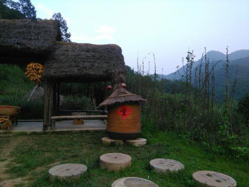

重渡沟风景区位于洛阳市栾川县境内，豫西山区熊耳山腹地，距洛阳市118公里，离栾川县城48公里， 景区内有海明农耕文化村、重渡沟漂流、滑草、滑索、滑道等历史文化景观和娱乐设施供您赏玩。重渡沟 风景区是国家AAAA级景区、国家生态示范区、伏牛山地质公园、河南省十佳景区，是集观光、休闲、购物为一体的自然风景区。
重渡沟景区以特有水、竹资源在中原地区独领风骚。整个景区分南沟和西沟两大区，南沟飞瀑流泉， 突出“水”；西沟秀竹茂林，突出“幽”。 主要景观有：竹海、水帘仙宫、菩提神树、飞瀑流泉、高峡平>湖、蘑菇崖、听涛岭等一百多个景点。
山因水而秀，树因水而旺，竹因水而翠，石因水而奇，沟因水而动，人因水而聪。重渡沟赐予游客的， 是全方位的审美感受和熏陶。同来的游伴说，来时俗气十足，去时带仙鹤之气；来时心灵浮躁，去时呈恬淡之态，真正的归依山水、洗心革面，真正的沐浴风华、休闲雅趣

友情链接：途牛旅游网官网
电话：4007-999-999 +0086-25-8685-9999